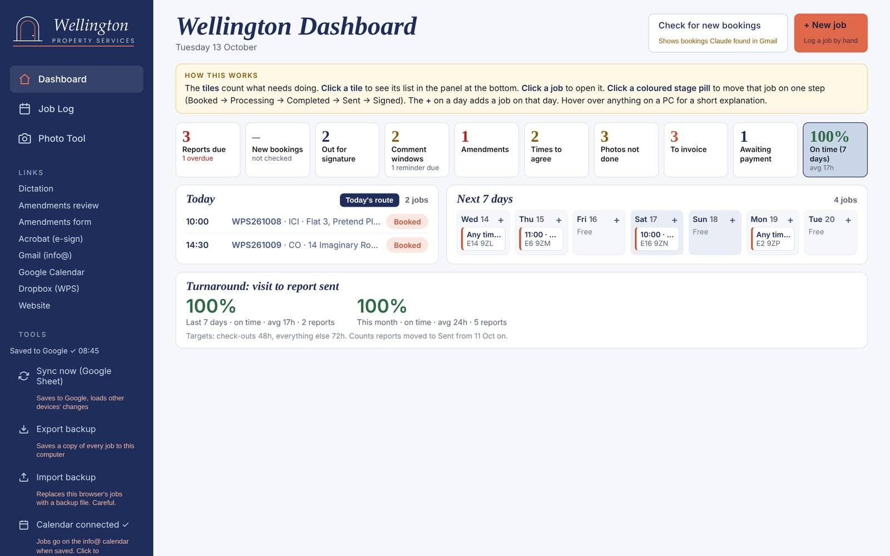
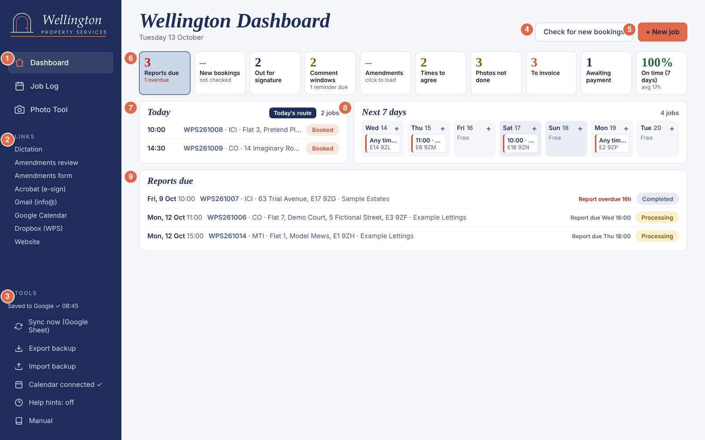
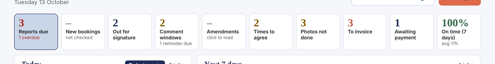

A step-by-step guide for Wellington Property Services, written for someone opening these tools for the first time.
| Tool | What it's for | How to open it |
|---|---|---|
| Dashboard | Your home page. One screen showing what needs doing today: reports due, new bookings, comment windows, invoices. | The web address below. It always opens here. |
| Job Log | Every job you've booked, as a list or a calendar. Where you add, edit and move jobs along. | Job Log in the sidebar. |
| Photo Tool | Turns a day's site photos into renamed, watermarked zip files, one per job, and saves the photo link to the job. | Photo Tool in the sidebar. Use it on the PC. |
| Dictation | Talk your notes into the phone room by room, then copy them to Claude to write up. | Dictation under LINKS in the sidebar. Use it on the phone. |
All four live at one web address. Bookmark it in Chrome on the PC and on the phone:
https://8kj2j8jv85-maker.github.io/wps-job-log/
When Google asks you to sign in, always choose info@wellingtonparker.com. That's the account that holds the Job Log Sheet, the calendar and the inbox the tools read.
Your jobs are saved in two places at once:
On the PC every change saves to Google by itself within a few seconds. The sidebar then shows Saved to Google ✓ 08:45 (with the time). On the phone, tap Sync now each time you open it (see section 11).
There are two kinds of help built into the pages:

The Manual link just under the switch opens this manual.
This is the normal rhythm. Each step is explained in more detail later in the manual.
The Dashboard is the first page you see. It fits on one screen of the PC.

| 1 | Pages. Dashboard, Job Log and Photo Tool. The one you're on is highlighted. |
| 2 | LINKS. One-click shortcuts to Dictation, the amendments pages, Acrobat, Gmail, Calendar, Dropbox and the website (section 12). |
| 3 | TOOLS. Saving to Google, backups, the calendar connection, Help hints and this manual (section 12). |
| 4 | Check for new bookings. Shows the bookings Claude found in your inbox, for you to check (section 7). |
| 5 | + New job. Log a job by hand (section 6). |
| 6 | Tiles. Each one counts something that needs doing. Click a tile to show its list in box 9. |
| 7 | Today. Today's jobs in time order, with Today's route for Google Maps. |
| 8 | Next 7 days. The coming week, a day per column. Click a job to open it. Click + on a day to add a job on that date. "Any time" means no time agreed yet. |
| 9 | The list panel. Shows the list for whichever tile is selected (highlighted in blue). It shows up to 7 lines, then Show all. |

| Tile | What it counts | What to do |
|---|---|---|
| Reports due | Jobs you've visited whose report hasn't been sent, soonest first. Red line underneath = how many are overdue. | Write the report, then move the pill on. |
| New bookings | Bookings Claude found in Gmail that you haven't handled. Shows "–" until you click Check for new bookings. | Check for new bookings (section 7). |
| Out for signature | Inventory and check-in reports at Sent, waiting for signatures in Acrobat. | Move to Signed when the signed copy arrives. |
| Comment windows | The 7-day comment window on each check-in report you've sent. The line underneath shows reminders due. | Section 8. |
| Amendments | Jobs with tenant comments still open. Shows "–" until loaded. | Click the tile, then Load amendments. |
| Times to agree | Booked jobs with no time set. | Agree a time, open the job, add it. |
| Photos not done | Jobs visited in the last 30 days, report not sent, no photo link saved. | Run the Photo Tool for them. |
| To invoice | Report sent, not invoiced yet. | Invoice in Tide, click the invoice pill. |
| Awaiting payment | Invoiced, not paid yet. Shows the invoice number. | Click the invoice pill again when paid. |
| On time (7 days) | The share of reports sent within target over the last week, and the average hours from visit to sent. Targets: check-outs 48h, everything else 72h. Green 80% and over, amber 50–79%, red below. | Click for the month's figure too. |
Number colours: red = late or needs action now, amber = worth doing soon, navy = information, grey = nothing there.
Every job has a stage, shown as a coloured pill. Clicking the pill moves the job one step forward. It never goes backwards from a click.
| Stage | Means | Move it here when… |
|---|---|---|
| Booked | In the diary, not visited yet. | Automatic for new jobs. |
| Processing | Visited, report being written. The report due time is counted from when you click this. | You've done the visit. |
| Completed | Report written, not sent yet. | The report is finished. |
| Sent | Report has gone out. The sent date is recorded. For check-ins, the 7-day comment window starts. The job also joins "To invoice". | The day you send it (or send it for signature). |
| Signed | Check-in report signed. | Acrobat's signed copy comes back. |
| Deemed agreed | Check-in window closed with no signature and no open comments. | You don't: it's set by itself (section 8). |
| Archived | Finished and filed. Drops off the Dashboard lists. | The job is fully done. |
Clicking goes Booked → Processing → Completed → Sent → Signed → Archived. A Deemed agreed job goes to Archived.
Once a job is visited (Processing, or Booked with the visit time passed), it gets a due time: 48 hours for check-outs, 72 hours for everything else. You'll see "Report due Wed 16:00" under the pill, amber when it's within 6 hours, and red "Report overdue 16h" when late. Overdue rows in the Job Log are shaded red.
Click Job Log in the sidebar. It shows every job, with the ones needing a report first, then the newest.

| 1 | Count cards. How many jobs at each stage, plus overdue, to invoice and awaiting payment. Click a card to show only those jobs. Click it again to show all. |
| 2 | List / Calendar. Switch between the list and a month calendar. |
| 3 | Search. Type part of an address, postcode, agent, tenant name or email, job number or invoice number. |
| 4 | Filters. Show one job type, one agent or one month. |
| 5 | Stage pill. Click to move the job on one step. The line underneath says when the report is due. |
| 6 | Invoice pill. Click for Not invoiced → Invoiced → Paid (a fourth click goes back to Not invoiced). It shows "To invoice" in coral once the report is sent. |
| 7 | Pencil. Open and edit the job. |
| 8 | Bin. Delete the job. It asks first. There's no undo, and it also removes the calendar entry. |
| 9 | Calendar icon (only when the calendar is connected). Puts the job on the info@ calendar, or updates it. Blue = already on the calendar. |

Click + New job (top right of the Dashboard or Job Log), the + on a day, or an empty calendar day. To change a job, click its address or the pencil. The same form opens either way.

| 1 | Paste box. Paste the agent's booking email and click Extract job details. It fills in the date, address, postcode and job type it can find. It works best when the address and postcode sit on their own line. Always check what it fills in. |
| 2 | Job number. Fills itself: WPS + year + month + number, e.g. WPS261015. Numbers are never reused, even after a delete. You can type over it (e.g. for an old Parker number). |
| 3 | Status. The stage. Change it here to move a job backwards. |
| 4 | Invoice and invoice number (from Tide). |
| 5 | Agent / client. Pick from the list. Choose + Add new agent… at the bottom to add one. |
| 6 | Agent contact. The saved contact for that agent. Click Edit agent contact details to change it. It's saved for every job with that agent. |
| 7 | Tenant emails. Separate two tenants with a comma. Used for the 7-day reminder on check-ins. Fill it in on every check-in. |
| 8 | Copy to (agent / landlord). Who gets the "amendments in progress", "signed" and "deemed agreed" emails. Several addresses, separated by commas. Left blank, the agent's saved email is used. |
| 9 | Save job (or Save changes). If the calendar is connected, the job goes on the info@ calendar too. Cancel closes without saving. |
The other boxes: date and time of the visit, property type, bedrooms, extra areas, street address, town, postcode, tenant names and phone (who to contact for access), and notes (access details, key collection and so on).
When you've corrected a check-in report after tenant comments and sent it again, open the job. Under Status you'll see when its window closes and a button:

Click it the day you re-send. The job goes back to Sent and a new 7-day window starts, covering the changed items only. The reminder wording changes to match.
Three times a day (7:51, 12:51 and 15:51, Monday to Saturday) Claude reads the info@ inbox and lines up anything that looks like a new booking, a change to a booking, or a cancellation. Nothing goes into the Job Log until you say.
Click Check for new bookings. The first time each session, Google may ask you to sign in (choose info@). A small coral number on the button shows how many are waiting. The cards appear in a To review tray:

| Card | Buttons |
|---|---|
| New booking (coral label) | 1 Add to log adds it straight away with the next job number. 2 Edit & add opens it in the job form first, so you can check or add details, then Save job. If it says "Possible duplicate of WPS…", it looks like a job you already have. Check before adding. |
| Change to a booking (blue label) | It shows which job it matches and the current date and time. 3 Apply change updates the date and time on that job and adds a note. 4 Edit first opens the job with the change filled in, for you to check and save. |
| Cancellation (grey label) | 5 Delete cancelled job removes the matching job and its calendar entry. It asks first. No undo. |
| Every card | 6 Dismiss ignores it. Nothing in the log changes. 7 Open email opens the original email in Gmail. Use it to double-check. |
Hide (top right of the tray) folds it away. Anything you haven't handled shows again next time you check.
This only applies to inventory and check-in reports. Tenants have 7 days from when the report is sent to send comments through the comments form. If they don't comment or sign, the report is deemed agreed.


Click the tile, then Load amendments. Google may ask you to sign in. It reads the WPS Amendments Sheet and lists every job with tenant comments still open:

Use it on the PC, after a day of visits. It does four things for each job: splits the day's photos into jobs, names them by room, adds the watermark, and makes one zip per job. Everything happens on the PC. Your original photos are never changed.

Drag the whole day's photos onto the dashed box, or click it and choose them. A whole Send Anywhere batch is fine.
The photos are split into sets wherever there's a gap of 30 minutes or more between shots. Each set is matched to a job by where the photos were taken, or by booking time if the photos have no location.

| 1 | How it matched. Green "Matched by location" is reliable. Amber "Matched by booking time — check" or "Location match — check" means look at it. "Not matched — pick the job" means choose one. |
| 2 | Job Log. The job this set belongs to. Jobs near where the photos were taken are listed first, with the distance. Pick a different one if it's wrong. |
| 3 | Job number and postcode. Fill in from the job. You can type them by hand. The zip button stays grey until both are there. |
| 4 | Names preview. What the zip and photos will be called, e.g. WPS261006.E39ZF.zip and WPS261006.E39ZF.12.10.26.Kitchen_01.jpg. |
| 5 | Process & download zip for this job (step 4). |
| 6 | Areas check. "All areas set" in green, or how many photos still have no room. |
| 7 | Photos. ▶ in coral marks the first photo of a room. The grey label on the following photos shows they belong to that room. |
| 8 | This batch. How many photos and jobs, and that it can see the Job Log. |
| 9 | Process all jobs makes every zip in one go. Below it, + Add more photos (anything you missed) and Start again (clears the tool, originals untouched). |

Click the first photo of each room. A panel opens at the bottom:

| 1 | Room buttons. Click the room. Every photo after it belongs to that room until the next one you mark. The panel then moves to the next photo, so you can carry on. |
| 2 | Other area. Type a room that isn't in the list (e.g. "Bedroom 1 (1st LHS)") and click Set or press Enter. It's added to the list for next time. |
| 3 | Rotate left, right or upside down. |
| 4 | Remove photo leaves it out of the zip. It isn't deleted from your PC. Click again to put it back. |
| 5 | Start a new job from here splits the set at this photo. |
| 6 | Close (or Esc). |
Keyboard shortcuts in the panel: ← → previous/next photo, R rotate, Del remove, Esc close. To rotate several at once, click one photo, then Shift-click another to select the run between them (or Ctrl-click to pick photos one by one), and use the buttons in the panel.
The External picture room is special: as well as going in the zip, a clean copy (no watermark, larger) is saved separately as the report cover photo, e.g. WPS261006.E39ZF.cover.jpg.
Click Process & download zip on the set (or Process all jobs). A progress bar shows each photo. When it's done:

Inside each photo: the date and time it was taken are kept, the location is removed, and a small navy Wellington Property Services tag with the date and time sits in the corner.
Click Settings at the bottom of the sidebar. Settings are saved on that PC.

Use it on the phone during a visit. Open it from Dictation under LINKS in the sidebar (on the phone, it's under Menu ☰). Add it to the home screen so it opens like an app. The notes are kept on that phone only, until you copy them out.


Top bar:
Steps:
While talking you can say "full stop", "comma", "question mark", "new line", "new paragraph" or "next item" (starts a new bullet). Clear (next to the room name) empties that room's text.


The Dashboard and Job Log work on the phone and tablet. The sidebar folds into a bar at the top, and each job shows as a card.


The Photo Tool is meant for the PC (big batches of photos and downloads). Dictation is meant for the phone.
| What you see | What to do |
|---|---|
| A change Claude made isn't showing on the PC. | Press Ctrl+F5 to load the latest version. |
| The phone or tablet shows no jobs. | Tap Load my jobs from Google and sign in as info@. |
| Phone doesn't show what you did on the PC. | Tap Sync now. |
| "Changed on another device — click Sync now" | Click Sync now. It brings in the other device's changes. If both were changed it asks which to keep: OK = Google's copy, Cancel = this browser's. |
| "Google sign-in pop-up was blocked" | Allow pop-ups for the site (icon at the right of Chrome's address bar), then try again. |
| "Not saved to Google — will retry on next change" | Usually the internet dropped. Click Sync now when you're back online. |
| Amendments or New bookings tile shows "–". | Normal until you load them. Click the tile, then the button. |
| "Google refused Gmail access (403)" | Tell Claude. It's a Google set-up issue, not your data. |
| Lots of reports overdue. | Move the pills of sent reports to Sent or beyond. |
| Photo Tool: "Can't see your Job Log jobs" | Open it from the sidebar in the same Chrome as the Job Log. You can still type job numbers by hand. |
| Photo Tool split a visit wrongly. | Merge with job above / Start a new job from here (section 9), or change the gap in Settings. |
| Photos had "no date taken inside". | They're HEIC or edited copies. Check the split. Set the iPhone to Most Compatible. |
| Dictation microphone does nothing. | Allow the microphone when asked. Check signal. Try switching off audio backup in Settings. |
| Deleted a job by mistake. | There's no undo. Re-add it, or ask Claude to help restore it from a backup. |
Things that aren't finished yet, as of 12 October 2026:
If this manual and the tools ever disagree, the tools are right. Ask Claude to update the manual.